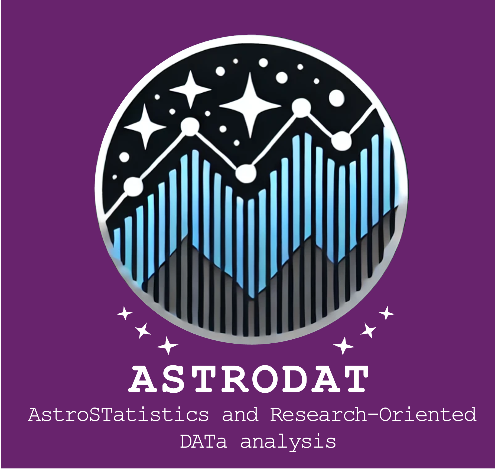

We were privileged to have the following speakers share with us at ASTRODAT 2025. Links to resources from their talks are given below.
| Katherine Harborne (Durham University) | Version Management with git for collaborative coding |
| Samuel Farrens (CEA Saclay) | Scientific Software Development |
| Alastair Basden (Durham University) | Project management at scale |
| Sarah Johnston (Durham University) | Debugging your code |
| Matt Graham (University College London) | JAX for scientific computing and inference |
| Natalia Porqueres (CEA Saclay) | Bayesian Inference & Sampling |
| James Nightingale (Newcastle University) | Test-driven development, and Bayesian Hierarchical Models & Graphs |
| Kiyam Lin (University College London) | Intro to Simulation-Based Inference (SBI) |
| Maximilian von Wietersheim-Kramsta (Durham University) | SBI: Testing & forward models |
| Bron Reichardt Chu (Durham University) | How to package and release your project |
During the workshop, participants were placed in teams based on common research interests to work on data analysis projects. Below are short summaries of their projects, and the links to the repositories where you can find the code and documentation for each team's project.
Developed Glass Cannon: An add-on package from GLASS to simulate the galaxy and HI fields. These fields are simulated using bias factors on the dark matter field, which take three cosmological parameters as input: h, OmegaC, and OmegaB. The package then allows for the angular power spectra (Cl) on the auto and cross correlation from both fields. Simulation-based inference using neural likelihood estimation can then be done on these Cls to infer the three cosmological parameters named earlier.
In the BlackWidow (Bayesian Line Analysis Code (K) WIth Dust Or Without) project, we have been using Bayesian inference to infer gas-phase abundances using analytical models from Curti et al. 2020. We all learned new skills in collaborative coding (150 commits to the BlackWidow repo!!!), emission line science and Bayesian statistics. These skills will be carried into our future workflows (with some team members already starting to implement git workflows in their own work!) With many more possible extensions, this collaboration has been brilliantly productive and will continue beyond ASTRODAT!
HAWKEYE - Hierarchical Analysis With Knowledge of lEnsing, Yielding Estimates
This project models a gravitational lensing system by simulating the deflection of light from a background galaxy (represented by a Sérsic profile) by a foreground mass modeled as a Singular Isothermal Sphere. The simulation generates a mock lensed image, and Bayesian inference is used to recover the underlying physical parameters by comparing model predictions to the simulated data via a chi-squared likelihood. An MCMC sampler is employed to explore the 8-dimensional parameter space, which includes the Einstein radius, Sérsic parameters, intensity, and the positions of both the lens and the source. To accelerate computation and enable GPU portability, the core simulation and likelihood functions have been converted to JAX, allowing for efficient execution on modern hardware.
The ESA Education Office sponsored 3 tertiary education students to attend the ASTRODAT: AstroStatistics and Research-Oriented Data Analysis course in the frame of the ESA Academy Short Course Scholarship programme. The scholarship covered the student registration fees (directly paid by ESA Education Office) and provided a maximum reimbursement of EUR 350 towards travel and EUR 400 toward accommodation expenses (for 6 nights max), which were reimbursed via a single bank transfer after the course and were paid upon submission of receipts.
To be eligible for an ESA Academy Short Course Scholarship, students had to fulfil the following criteria at the time of application:
Priority was given to students who had less than 2 years of professional experience and had never taken part in an activity sponsored by the ESA Education Office.
The deadline for applications was 17th July 2025 at 23:59 CEST.
The decision by the Selection Committee was communicated by 31st July 2025.
ESA is committed to achieving diversity and creating an inclusive environment. To this end, applications from all eligible candidates irrespective of gender, sexual orientation, ethnicity, beliefs, age, disability, social origin, or other characteristics were welcomed.
The ASTRODAT organisers are committed to providing a friendly, safe and welcoming environment for all. All participants are expected to behave professionally and to be respectful, and to follow our Code of Conduct in all venues, including workshop-related social events. Our full Code of Conduct, along with avenues for reporting violations of the Code of Conduct, is linked here.
Contact us at astrodatworkshop@gmail.com.